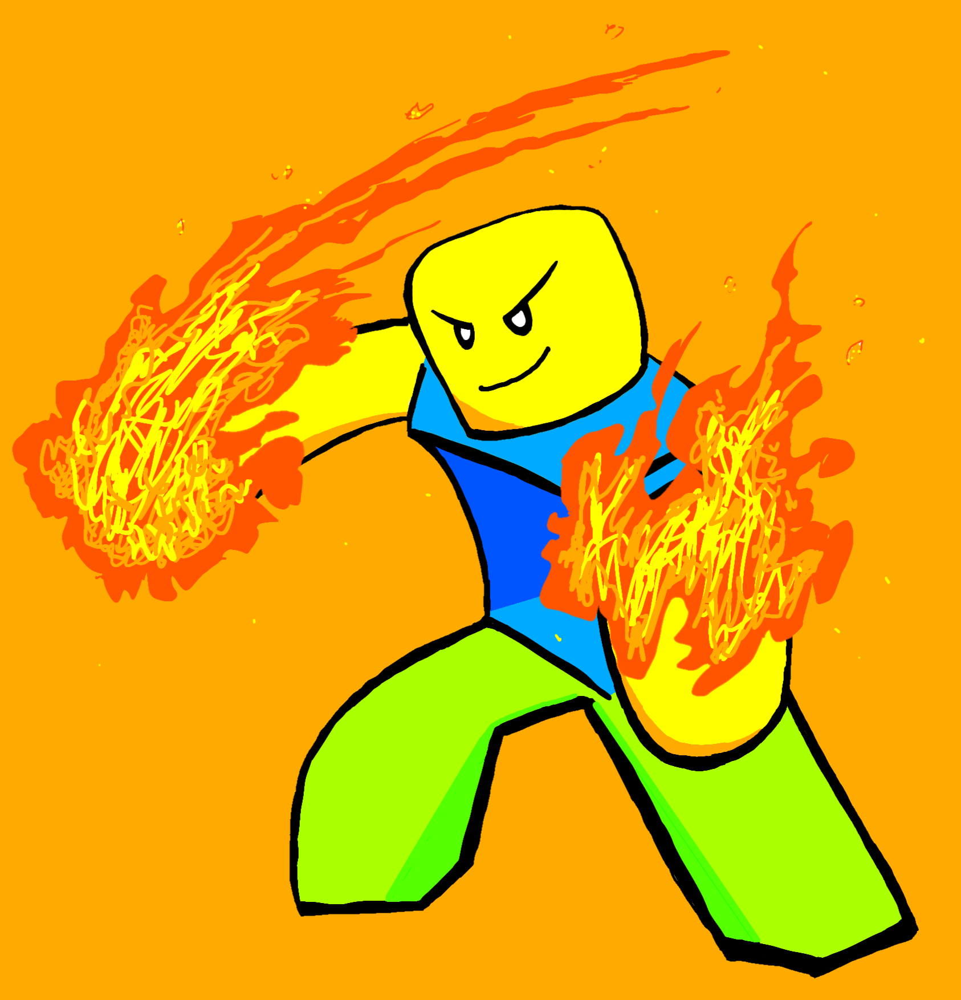

Spells Game

About the Game
- 03.2021 - 10.2021- Collaboration with GodDharma
- Written in Lua
- Art
- Game Link
Inspiration
Over my few years playing games on ROBLOX, I have come across my fair share of spell games. Coupled with my extremist love for the Harry Potter franchise, I then decided to create my own game interpretation in 2021.
Over my few years playing games on ROBLOX, I have come across my fair share of spell games. Coupled with my extremist love for the Harry Potter franchise, I then decided to create my own game interpretation in 2021.
Functionalities
| Keybind | Description |
|---|---|
| Q | Explosion, Client shoots a dark blue fireball to their mouse cursor's direction, dealing large damage to unfortunate victims. |
| R | Black Thunder, High voltage lightning strikes within a 60m radius of the Caster, dealing large damage to unfortunate victims. |
| G | Gluttony, Veil of darkness consumes all that enter it's domain, said to be quite disorientating. |
| E | Waterfall, Gush of water drops 5m infront of the Caster, dealing large damage to unfortunate victims. |
Challenges Faced
-
Challenge:
Animating spells travelling
Solution:
Getting the spell direction:
Firstly, on detecting the client pressing the corresponding spell keybind, the client's mouse position on the 2d screen is translated into a 3d CFrame in the game and sent to the server.
Moving the spell:
I settled on using Raycasting to check for future collisions between the spell itself and a physical quantity in the game for each iteration of animating the spell travelling on it's course. If there was to be a collision, after animating the moving the spell object to it's last vector3 position, it triggers an event to manage the visual and code of a collision of that specific spell. -
Challenge:
Animating Black Thunder Spell
Solution:
Calculating Position Vector3:
Firstly, I take the magnitude of the difference between the client's player model poition and the client's mouse position in the 3d space, lets call this value X0. If X0 is lesser than or equal to the range, in this case 60, the Direction Vector3, Xfinal, will be the the vector3 drawn from the client's player model to the client's mouse position in 3d space. However, if X0 is greater than the range, Xfinal will be calculated by first calculating the CFrame at the client's player model pointing at the client's mouse position in 3d space, let's call this X1. Next we multiple X1's LookVector' with the range to get the Vector3 position, X2, of the intersection between X1's LookVector and a sphere with radius range, in this case 60.
Calculating Spell Start Position:
Now, We have Xfinal which either rests on or within a sphere with radius range, in this case 60, around the client's player model. To calculate the spell's starting position, we first have to multiple Xfinal with Vector3(1,0,1) to have a Vector3 with only the X and Z axises and a Y axis of 0, which we will call X3. Next, we add X3 with the client's player model's Y value that we find by multiplying the client's player model's position by the Vector(0,1,0), call this X4. To find the final starting position, we take X4 added with the Vector3(0,Ygain,0) where Ygain is the height in which the spell starts at relative to the client's player model.
Moving the spell:
Similar to Challenge 1's Moving solution, we use raycasting. However, instead of moving the spell based on it's CFrame LookVector, we move this spell based on it's CFrame UpVector multiplied by -1 to get a "DownVector".